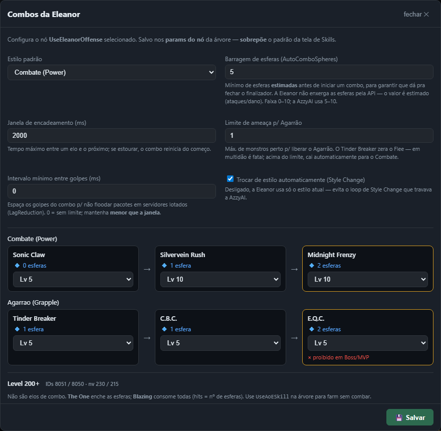
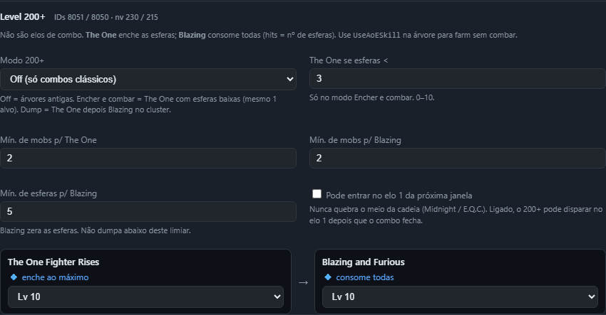

Eleanor: combos, esferas e ofensiva 200+
A Eleanor não é um homúnculo de “uma skill de área e um ataque”. Ela mistura dois estilos mutuamente exclusivos, esferas que a API do jogo não mostra, e duas skills de nível 200+ que não são elos de combo.
Por que ela é diferente
Os outros Homunculus S escolhem uma skill de área e, se tiverem, um ataque de alvo único. A Eleanor empilha três sistemas:
- Estilos. Combate (Power) e Agarrão (Grapple) são mutuamente exclusivos.
Style Changetroca entre eles; a IA tem trava anti-loop para não oscilar. - Esferas estimadas. A API do cliente não expõe a contagem. A IA estima: sobe com ataques e dano recebido (teto 10) e desce pelo custo de cada golpe. A barragem só inicia um combo quando há esferas de sobra para fechar o finalizador.
- Guarda-chuva. O nó
Ofensiva da Eleanor(UseEleanorOffense) cuida de estilo + barragem + cadeia + (opcional) ofensiva 200+ num só tick. Não monte Sonic → Silvervein → Midnight na mão.

Cadeias clássicas (nv 100–133)
- Combate (Power): Sonic Claw → Silvervein Rush → Midnight Frenzy.
- Agarrão (Grapple): Tinder Breaker → C.B.C. → E.Q.C.
No estilo Auto, a Eleanor entra no Agarrão só quando está isolada (poucos monstros no raio, dentro do limite de ameaça). Em multidão fica no Combate: o Tinder Breaker zera o Flee, e isso é fatal com vários inimigos. O E.Q.C. é podado em Boss/MVP (o servidor recusa).

Tinder e C.B.C. saem no boss; o E.Q.C. não. A IA cai para o Combate ou espera a janela resetar, em vez de stutter no finalizador proibido.
Skills 200+: não são elos de combo
Blazing and Furious e The One Fighter Rises não entram nas cadeias Power/Grapple. Não exigem Style Change, não avançam o “passo 2” do combo no simulador, e não respeitam a janela de 2 s dos elos clássicos. São skills ativas autônomas que mexem na economia de esferas.
| ID | Skill | Nv | O que faz |
|---|---|---|---|
8051 | The One Fighter Rises | 230 | AoE centrada na Eleanor. Enche as esferas ao máximo. CD 3,8 s → 2,0 s por nível. Delay 500 ms, cast 0. |
8050 | Blazing and Furious | 215 | Dash no inimigo, AoE em volta do alvo. Exige ≥1 esfera; hits = nº de esferas; consome todas. CD 1 s, delay 500 ms. |
Brushup Claw (8049) é passiva — fica fora do editor, como as outras passivas. Os nomes “Fighter” não exigem o estilo Power.

The One = fill (enche, não gasta). Blazing = dump (zera as esferas). A ordem padrão no papel AoE é The One depois Blazing: primeiro a área + refill, depois o dump se ainda houver cluster e esfera.
Dois jeitos de usar (como o Blast Forge do Dieter)
Quem monta a árvore “igual ao Dieter” (skill em área em cima da ofensiva) e quem só quer encher esferas no alvo único usam superfícies diferentes. As duas se complementam.
Jeito A — Skill em área (sem combar)
Coloque UseAoESkill acima de UseEleanorOffense no seletor de ataque — a árvore padrão da Eleanor já vem assim. A tela Skills por homúnculo lista The One e Blazing no papel AoE: ordem, nível, gate “só se TIVER / NÃO TIVER”, ou esvaziar o papel.
A Eleanor tem ataque de alvo único (Sonic), então a AoE não dispara com 1 monstro. Vale o AutoMobCount (padrão 2): cluster → The One (se ready) senão Blazing; 1 alvo → a AoE falha e o seletor cai no combo. Blazing com 0 esferas é pulado (o jogo recusaria o cast).
Jeito B — painel Combos / fillThenCombo (alvo único)
O guarda-chuva continua necessário: a AoE não dispara com 1 mob, e quem não pôs UseAoESkill na árvore ainda precisa refill. No painel Combos da Eleanor, abaixo das cadeias, a seção Level 200+ escolhe o modo. Com Encher e combar, The One sai se as esferas estão abaixo do limiar mesmo com 1 alvo; Blazing não dumpa em alvo único nesse modo.
Se a árvore tiver os dois nós, a ordem do seletor resolve o conflito: no cluster a AoE come o tick; o guarda-chuva só age quando a AoE recusa (1 alvo, recarga, sem esfera para Blazing, papel esvaziado).
| Jeito | Onde se define | Quando usar |
|---|---|---|
A — AoESkill em área | Tela Skills (papel AoE) + nó na árvore | Farm em grupo, sem gastar a janela de combo. |
B — guarda-chuvaOfensiva da Eleanor | Painel Combos, seção Level 200+ | Encher esferas no alvo único; dump se a árvore não tiver AoE. |
C — skill no nóUsar skill específica | No próprio nó (ID 8050 ou 8051) | Escape: um ponto exato da árvore. Veja abaixo. |
Presets do painel Combos
O modo 200+ vive nos params do nó (ou no padrão de homun_skills.json). Precedência: nó > padrão da tela de Skills > off. Árvore antiga sem a chave continua só nas cadeias clássicas.
| Modo | O que faz |
|---|---|
off | Só cadeias clássicas. Use para regressão ou se ainda não tem as skills 200+. |
fillThenCombo | Padrão do painel. The One se as esferas estão abaixo do limiar (mesmo 1 alvo) ou se há cluster. Não dumpa Blazing em 1 alvo. Depois do fill, segue o combo. |
aoeDump | The One depois Blazing no cluster. Útil se a árvore não tiver UseAoESkill. |
Knobs: mínimo de mobs para The One / Blazing, limiar de esferas para o fill, mínimo de esferas para o dump, níveis, e a opção de entrar no elo 1 da próxima janela. O meio da cadeia (Silvervein / Midnight / C.B.C. / E.Q.C.) nunca é abortado por 8050/8051 — o visualizador de combo não conta essas skills como “passo 2”.
Simulador: lvl 200 vs 215 vs 230
O campo lvl do homúnculo (só no simulador) decide o que já foi aprendido. Para a Eleanor:
- lvl 200 — nem Blazing nem The One. Só as cadeias clássicas (ótimo para regressão dos cenários antigos).
- lvl 215 — Blazing entra; The One ainda não.
- lvl 230 (ou o padrão 999) — as duas.
O painel lateral mostra as esferas estimadas e a sequência do combo sobre o sprite. Detalhes do campo lvl: Guia do Simulador.
UseSkill explícito só como escape
Se você precisa de The One ou Blazing num ponto muito específico (por exemplo, só contra um grupo de chefes via nó Monstro), use Usar skill específica com o ID 8051 ou 8050. Fora isso, prefira o papel AoE ou o guarda-chuva: eles já conhecem esferas, recarga, alcance e a ordem de prioridade.